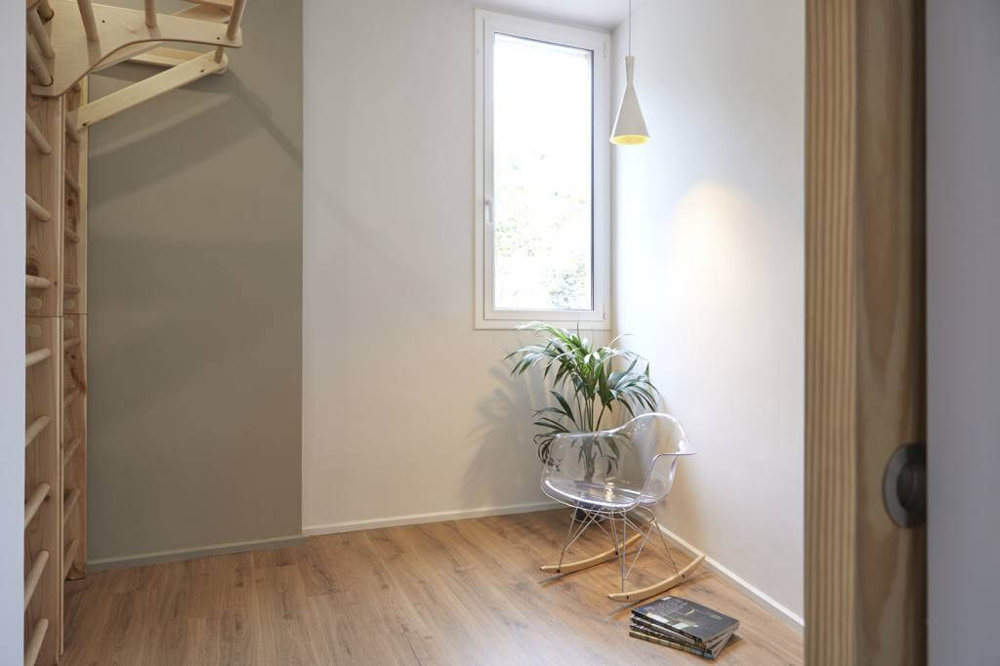
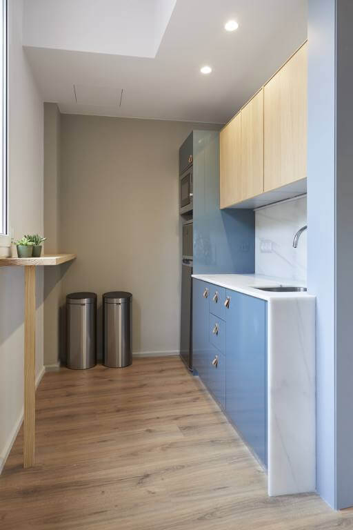
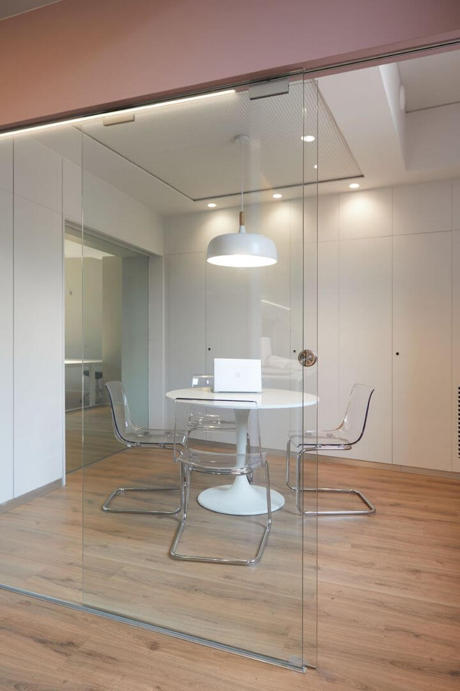

Imagine yourself spending your working hours in a brand-new office beside the sea where you can enjoy...
- an attractive, clean, calm and uncluttered work environment
- lots of natural light to boost your feel-good hormones
- your own fixed space with an ample desk, a chair designed for many hours of comfortable sitting, and top internet
- complete freedom to come and go as you choose; 24 hours a day, 365 days a year
- being part of a small group of co-workers (13 people) with whom to share experiences, enthusiasm and laughs (and the odd misery!)
What? A Co-working by the sea, with a room for yoga or working-out, and with a shower?

You can break up your day with a run on the sea-front or a swim in the sea (some co-workers swim in the sea all year round!). More into yoga or working-out indoors? There's room for all type of sport lovers who do freelance work.
Of course, you'll also find a cosy kitchen and a private meeting room.
 We’ve a constant supply of fresh coffee and tea. And if you've any special wishes, we can consider adding them to our monthly shopping list.